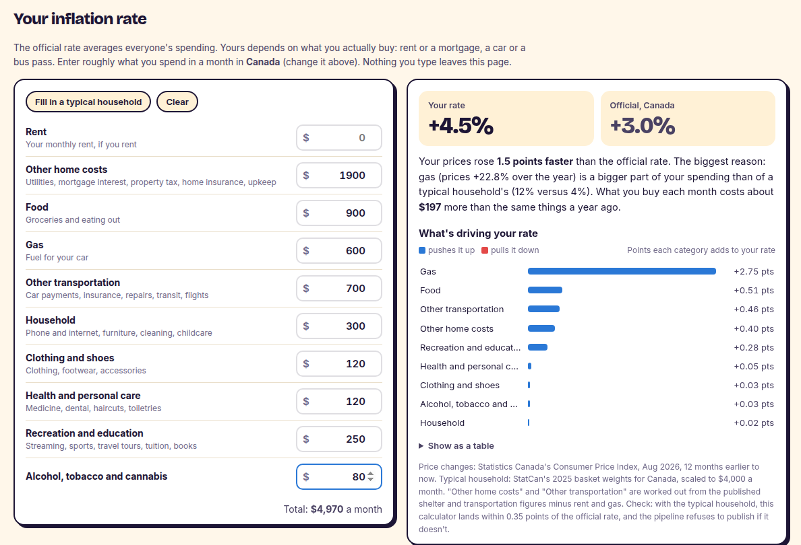

What it does
Every month Statistics Canada publishes the numbers people care about: jobs, unemployment, inflation, house prices, job vacancies and the size of the economy. This site gathers them in one place, by province, and keeps itself current. Every weekday it checks whether anything new has been published. If so, it downloads it, rebuilds everything, re-checks it and puts the new version online, with no one pressing a button.
It also explains the numbers. A "What it means for you" section turns them into plain sentences for a renter, a job seeker and an employer in your province. A monthly briefing summarises what changed. And it tells you when a move is just noise: a monthly job loss of 41,700 sounds like news, but if it's inside StatCan's own margin of error, the chart shows it in grey.
Your own inflation rate

The official inflation rate averages everyone's spending, but nobody spends like the average. Someone who drives to work feels gas prices; someone who rents feels rent. Enter roughly what you spend in a month and the site works out your own rate, for Canada or your province. It then tells you why yours differs, for example "gas, up 23%, is 12% of your spending versus 4% for a typical household", and what that costs you in dollars. Nothing you type leaves your browser.
The part I'm most careful about is whether the math is right. The "typical household" isn't my guess: it's Statistics Canada's own record of how households split their spending. If the calculator is correct, feeding it that typical spending must give back the official inflation rate. It does, to within 0.08 percentage points on average across every province and month I checked. The site refuses to publish an update if that check ever fails.
How I know the numbers are right
The AI briefing, and keeping it honest
Each month an AI model (Google's Gemini) drafts a short briefing on what changed. AI is good at writing and bad at numbers, so code checks every number in the draft before it's published: the right value, the right measure, the right direction. In the first batch of 10 drafts, only 5 passed. Reading every failure showed most were my checker being too strict. In one case it read "rose" as describing the wrong number in the sentence. After fixing both sides, the next 20 drafts all passed, and the checker still catches all 15 mistakes I planted to test it.
Forecasts that admit when they lose
The site forecasts unemployment and inflation for the next few months, but only publishes a forecast that beats the simplest possible guess. For unemployment, nothing I tried beat "next month will be the same as this month", so that is what the site shows, and it says so.
Limits
- It shows what Statistics Canada publishes, about one to two months after the fact. It isn't a live feed.
- The inflation calculator uses the 8 broad spending groups StatCan publishes for every province. Your real basket is more detailed than that, so treat your rate as a good estimate, not an exact figure.
- "Other home costs" and "other transportation" are worked out from StatCan's published groups minus rent and gas, because StatCan doesn't publish them separately.